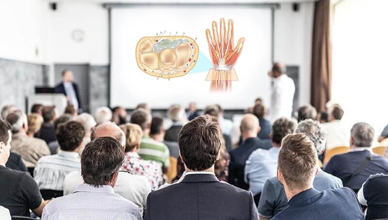

Jeszcze 3 tygodnie temu nie mógł zginać nadgarstka i utrzymać kubka w rękach. Dziś znów pracuje jako zegarmistrz!
Zygmunt (43 l.) pół roku temu stracił wszystko i jak sam określa: „wylądował na dnie”. Po poważnym wypadku na nartach i złamaniu obu rąk jego działalność w zawodzie zegarmistrza legła w gruzach, a jakby tego było mało – dowiedział się, że żona postanowiła odejść do… zaprzyjaźnionego instruktora jazdy na nartach. Przez paraliżujący ból kręgosłupa i pogruchotane kości i stawy w rękach miał ogromne problemy z samodzielnym funkcjonowaniem. Wszystko się zmieniło, gdy dostał szansę udziału w testach pewnej specjalistycznej formuły...
Gdy ciało odmawia posłuszeństwa
Rozmowa z Zygmuntem była bardzo emocjonalna. Mężczyzna niechętnie wraca do wydarzeń, które wywołały wiele bezradności, łez i bólu.
„Odkąd pamiętam byłem dość kruchym dzieckiem – moje ciało było podatne na wszelkie urazy, nadwyrężenia, zwichnięcia, złamania. Już w podstawówce miałem pierwsze kontuzje na WF-ie, kilka razy wróciłem do domu z wybitym kciukiem, parę razy ze zwichniętą kostką – w dorosłym życiu niewiele się zmieniło, może jedynie bardziej na siebie uważałem. Po 30-tce zacząłem mieć pierwsze problemy ze stawami – strzykanie w kolanach podczas zginania nóg, bóle kręgosłupa po dłuższym siedzeniu przy biurku, czasem przykurcze i sztywność w nogach, plecach i rękach. Momentami czułem się jak niedołężny, kuśtykający starszy pan – i bardzo nie lubiłem tego uczucia.
Najlepsze w tym wszystkim jest to, że – o ironio – ożeniłem się z prawdziwą sportsmenką. Moja żona była typem sportowca od urodzenia, zarażała mnie pasją do jazdy na rowerze, wyciągała na aktywne wycieczki za miasto, na ściankę wspinaczkową, a ostatniej zimy na te nieszczęsne dla mnie narty”.
„Wcześniej byłem facetem pełnym sił i energii”
Już drugiego dnia na stoku Zbigniew zaliczył potężny upadek, który unieruchomił go na kilka długich tygodni.

„Pogruchotane obie ręce, całe w bandażach, przeszywający ból, do tego sztywność kręgosłupa i pogłębione problemy ze stawami, gdy w końcu po kilkunastu dniach leżenia wyszedłem ze szpitala. Zostałem sam, z niesprawnymi rękami, którymi dotąd zarabiałem na życie. Człowiekowi w takich sytuacjach przychodzą do głowy najczarniejsze scenariusze. Nie wiedziałem, jak będą wyglądać moje kolejne dni i tygodnie – miałem ogromny problem z utrzymaniem w dłoni kubka, parę razy wylałem na siebie gorącą herbatę. Nadgarstki skrzypiały przy każdym ruchu, nie mogłem nimi w pełni swobodnie poruszać, było bardzo ciężko”.
„Znów jestem sprawny, silny i szczęśliwy!”
Dziś siedzę naprzeciwko Zygmunta i widzę uśmiechniętego, silnego mężczyznę, który w niczym nie przypomina tamtego pana ze zdjęć z grymasem bólu na twarzy. Zapytałam więc jak to możliwe i jaka jest dalsza część tej historii. Oto jego odpowiedź:
”Prawdopodobnie moje życie potoczyłoby się zupełnie inaczej, gdyby nie jeden wpis na forum internetowym. Znalazłem wiadomości dotyczące pewnego produktu, który może poprawiać kondycję ruchową u osób w każdym wieku. Metoda ta została już okrzyknięta w internecie “świetnym wsparciem dla przeciążonych stawów”, co brzmiało bardzo obiecująco. Poczułem, że to moja szansa i że warto byłoby przetestować ten preparat - nie miałem nic do stracenia.
Zdecydowałem się wysłać swoje zgłoszenie, a po 4 dniach otrzymałem oficjalną odpowiedź:
Czułem, że to była dobra decyzja, która może mi przynieść wiele dobrego. Zacząłem sobie wyobrażać, że znowu sprawnie poruszam rękami, nie odczuwam tego paraliżującego bólu od barków po kręgosłup, mogę znów bez trzęsienia rąk podnieść łyżkę z zupą, czy filiżankę gorącej kawy. Marzyłem, by te wyobrażenia stały się rzeczywistością”.
„Szok, zdumienie, a na końcu olbrzymia radość!”
Zapytany o dalszy przebieg historii, Zygmunt uśmiecha się od ucha do ucha.
Test polegał na przyjmowaniu preparatu raz dziennie, o tej samej porze. U mnie pierwszy efekt przyszedł jeszcze tego samego dnia – rano przyjąłem środek, a już popołudniu zmniejszyły się obrzęki dłoni. Następnego ranka obudziłem się bez sztywności palców i promieniującego bólu barku. Mogłem bez bólu rozprostować nadgarstki, nie czułem też już tego nieprzyjemnego rwania w plecach. To musiało wyglądać śmiesznie, ale siedziałem chyba przez pół dnia patrząc jak zginam i prostuje palce – bo nie mogłem się nadziwić, jak poprawił się stan moich rąk.
Po 3 tygodniach wróciłem do pracy w zawodzie zegarmistrza. Bez drżenia rąk, bez żadnych ograniczeń dłubię w tych maleńkich mechanizmach, naprawiam uszkodzone zegarki, nastawiam 4-milimetrowe wskazówki. Przybyło mi jeszcze więcej stałych klientów, niż miałem przed wypadkiem – wyszedłem na prostą, znów robię to co kocham. Z powykrzywianymi palcami, opuchniętymi, trzęsącymi się dłońmi i sztywnością nadgarstków byłoby to niemożliwe”.
Co sprawiło, że po 3 tygodniach Zygmunt mógł zapomnieć o sztywności, drżeniu, bólu i obrzęku stawów?
Bazą formuły, która pomogła Zygmuntowi zmniejszyć dolegliwości w tak krótkim czasie, są takie składniki jak: kwas hialuronowy, siarczan glukozaminy, czy kolagen typu II. Ich dobroczynne działanie na stawy i cały układ ruchu zostało wielokrotnie docenione przez znawców branży ortopedycznej i fizjoterapeutycznej. Co to oznacza dla Ciebie?
1
Ból i ograniczenia ruchowe mogą zmniejszać się od 1. zastosowania
Preparat ma kojący wpływ na zmęczone i obolałe mięśnie, kości i stawy. Może być cennym wsparciem dla osób, które skarżą się na sztywność i bóle stawów, mają za sobą kontuzję, uraz, złamanie lub zwichnięcie. Pomaga łagodzić nieprzyjemne uczucie trzeszczenia podczas zginania kolan czy łokci, może zmniejszyć opuchliznę, przykurcze i poranny ból startowy. Pozytywne działanie formuły chwalą sobie również zawodowi sportowcy.
2
Sprawne kolana i koniec „łupania” w kościach
Regularne stosowanie preparatu może pomóc zwiększyć zakres ruchomości w stawach barkowych, kolanowych, czy łokciowych. Wspierając się tą formułą, masz szansę zmniejszyć “strzelanie”, skrzypienie, łupanie i rwanie w stawach oraz poczuć lepszą płynność i swobodę ruchów. Dzięki większemu wydzielaniu naturalnej mazi stawowej poprawia się również komfort ruchowy – użytkownicy opisują to jako odczuwalnie lepsze „naoliwienie” stawów.
3
Wsparcie dla obolałych pleców
Przyjmowanie kojącej formuły może pomóc zmniejszyć ogniska zapalne i łagodzić dolegliwości wywołane przed nadmierne przeciążenie stawów. Preparat świetnie sprawdza się u seniorów i jest tak samo skuteczny w różnym stopniu nasilenia problemów.
4
Ciesz się aktywnym życiem i sprawnością ruchową!
Wsparcie przeciążonych mięśni, obolałego kręgosłupa, kolan, barków, bioder i nadgarstków pomoże Ci wrócić do ulubionych aktywności i cieszyć się sprawnością fizyczną bez ograniczeń ruchowych. Odzyskując pełną ruchomość w zakresie stawów przestaniesz czuć nieprzyjemne „zablokowanie” kończyn i paraliżującą sztywność. Sprężyste, mocne stawy i płynne, swobodne ruchy – oto Twój plan na nowe życie bez bólu!
Wiele godzin spędzonych w laboratoriach przyniosło fantastyczny rezultat. Okazuje się, że w XXI wieku jesteśmy w stanie łagodzić zaawansowane dolegliwości bólowe wynikające z przeciążeń, kontuzji - i nikt nie musi być skazany na ciągłe rwanie w kręgosłupie, skrzypienie kolan, bóle w korzonkach na zmiany pogody, ani drętwienie czy sztywność kończyn po dłuższym przebywaniu w jednej pozycji. Za sprawą cennych składników wspierających chrząstki stawowe i kojących obolałe mięśnie, preparat może posłużyć wielu osobom do łagodzenia uciążliwego bólu pleców, kolan, barków, bioder, czy nadgarstków, wspomóc zwiększenie sprawności ruchowej, a także przyczynić się do szybszej regeneracji po urazach, nadwyrężeniach i kontuzjach.
Zdumiewające efekty
Regularne stosowanie formuły Prostavin Plus przyniosło Zygmuntowi pożądane rezultaty - pomogło mu poczuć większą sprawność ruchową i wrócić do aktywnego i radosnego życia.

Prostavin Plus korzystnie wpływa na przeciążony układ ruchu i może odczuwalnie wzmocnić obolałe mięśnie, kości i stawy. Możesz przekonać się, że Twoje kolana, kręgosłup, barki i mięśnie są w stanie odzyskać sprawność, a ból stawów wcale nie musi dalej uprzykrzać Ci życia. Ta formuła pomoże Ci zmniejszyć ograniczenia ruchowe i stanąć na nogi!
Wzmocnij stawy z pomocą Prostavin Plus
Nie czekaj, aż trzeszczące i strzykające stawy same wrócą do formy. Chrząstki stawowe ulegają degradacji przy każdym ruchu i ścierają się coraz mocniej z każdym dniem. Warto więc zatroszczyć się o układ kostno-stawowy jak najszybciej, aby zachować płynność ruchów, mocne stawy, sprawne mięśnie i silne kości nawet do późnej starości. Pamiętaj – zasługujesz na aktywne i szczęśliwe życie, w którym nie będziesz mierzyć się z bólem i sztywnością stawów, rwaniem w kręgosłupie, nerwobólami, czy drętwieniem kończyn.
Trwa specjalna akcja promocyjna. Jest dostępna dla każdej osoby, która chce wspomóc swoje stawy i pozbyć się ograniczeń ruchowych wraz z formułą Prostavin Plus.
Jeśli chcesz zadbać o stawy jak Zygmunt, kliknij w poniższy link. Przekieruje Cię on bezpiecznie na oficjalną stronę producenta, gdzie czeka na Ciebie specjalna zniżka. Nie zwlekaj zbyt długo, bo dzienna liczba przyznawanych zniżek jest ograniczona, a chętnych nie brakuje!